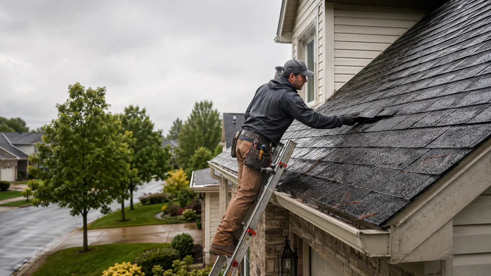

Leak investigation
Leak requests may involve ceiling stains, attic moisture, wall streaking, chimney areas, valleys, skylights, or vent penetrations. Providers may look for the actual water path before discussing repair options.
Connect with local roofing providers. Providers are independent, and service availability may vary by location.

Roof repair requests often involve leaks, missing shingles, flashing problems, storm damage, or localized wear. This platform can help homeowners connect with independent local providers who evaluate roofing issues and discuss possible repair options.
Homeowners should verify licensing, insurance, written estimates, and project terms before hiring any provider.
Roof repair typically focuses on a defined problem area, such as a leak path, damaged shingle section, loose flashing, nail pop, vent boot issue, or storm-related impact. Independent providers may inspect the concern, explain possible causes, and discuss whether a repair approach is suitable.
Because roof symptoms can be misleading, homeowners often benefit from having visible damage, interior stains, attic moisture, and roof age reviewed together.
Independent providers may describe repair options differently based on roof type, age, access, weather conditions, and the amount of visible damage.
Leak requests may involve ceiling stains, attic moisture, wall streaking, chimney areas, valleys, skylights, or vent penetrations. Providers may look for the actual water path before discussing repair options.
Homeowners often ask about missing shingles, lifted tabs, cracked shingles, exposed fasteners, nail pops, and small wind-damaged sections on asphalt shingle roofs.
Repair conversations may include step flashing, counter flashing, pipe boots, wall intersections, skylight curbs, roof vents, and other areas where the roof surface is interrupted.
After wind, hail, falling branches, or heavy rain, providers may review loose materials, impact marks, lifted edges, debris damage, and temporary protection needs.
Some repair requests involve drip edge, fascia-adjacent leaks, clogged valleys, gutter overflow, or water movement that affects the roof edge and surrounding trim.
When stains, condensation, or recurring moisture appear, providers may discuss attic airflow, intake and exhaust ventilation, insulation contact, and roof system performance.
A repair estimate may reference more than shingles. Homeowners should ask what exact materials, components, and limitations are included in writing.
Each provider may use a different inspection approach. These are common items homeowners may hear discussed during a repair estimate conversation.
RoofBridge Connect helps organize the request and route it toward local provider availability. Any inspection, estimate, repair scope, or agreement is between the homeowner and the independent provider.
Submit contact details, ZIP code, and the suspected repair concern.
Independent providers may contact you based on location, need, and availability.
A provider may evaluate the roof condition and discuss repair options or limitations.
Review licensing, insurance, scope, cost, timing, and terms before choosing a provider.
One visible symptom does not prove a specific cause, but these signs often justify requesting an evaluation.
Not always. A provider may recommend repair for localized issues or discuss replacement if age, widespread damage, or hidden deterioration makes repair less practical.
Small visible leaks can indicate a larger water path. Homeowners often request help promptly to reduce the chance of moisture spreading.
No. RoofBridge Connect helps homeowners connect with independent local providers. The platform does not perform roofing work or guarantee provider services.
Get connected with independent local roofing providers who may discuss repair options based on your location and project details.